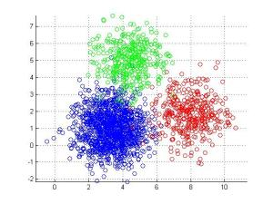

METODE CLUSTERING K-MEANS¶
¶
1. PENGERTIAN CLUSTERING¶
Menurut Eko Prasetyo (2012) mengatakan bahwa metode K-Means ini mempartisi data kedalam kelompok sehingga data berkarakteristik sama dimasukan kedalam sat kelompok yang sama dan data yang berkarakteristik berbeda dikelompokkan kedalam kelompok yang lain.
Clustering merupakan suatu metode penganalisaan data, yang sering di masukan sebagai salah satu dari metode data meaning, yang mana tujuan dari clustering ini untuk melakukan pengelompokan data berdasarkan karakteristik yang sama ke suatu wilayah yang sama dan data yang berbeda je wilayah lain. Untuk pengelompokan ke wilayah yang berbeda di sebut dengan K-mean clustering. K-means yakni salah satu bentuk dari algoritma clustering non hirarki.
Pada umumnya tujuan dari algoritma ini ialah membagi data atau disebut dengan mempartisi data yang ada ke dalam bentuk satu maupun lebih clusternya, membagi menjadi beberapa kelompok cluster. Pada algoritma ini bersifat menerima masukan dari berupa data tanpa adanya label kelas. Berbanding balik dengan sifat metode supervised learning yang menerima masukan dari berupa vektor data dan memiliki label data.
Metode ini akan melakukan pembagian data ke dalam satu cluster yang sama apabila ada data yang mempunyai bentuk karakteristik berbeda akan di tempatkan ke dalam cluster yang lain. Secara umum pada metode ini dapat membuat proses pengelompokan dangan prosedur yang ada sebagai berikut;
- Menentukan jumlah dari cluster pembagian.
- Mengalokasikan data secara acak ke cluster yang telah ada.
- Menghitung rata-rata pada setiap cluster dari data yang ada tergabung di dalamnya.
- Mengalokasikan kembali semua data yang ada ke cluster terdekat
- Mengulang proses ke 3 sampai tidak ada lagi perubahan ataupun perubahan yang terjadi masih sudah di bawah trheshold.
Berikut kelebihan dan kekurangan dari k-means clustering Kelebihan k-means:
Kelebihan k-means
- Mudah dilakukan saat pengimpelementasian dan di jalankan.
- Waktu yang di butuhkan untuk melakukan pembelajaran relatif lebih cepat.
- Sangat fleksibel, adaptasi yang mudah untuk di lakukan
- Sangat umum penggunaannya.
- Menggunakan prinsip yang sederhana dapat di jelaskan dalam non-statistik.
Kekurangan dari k-means:
- Sebelum algoritma di jalankan, titik K diinisialisasikan secara random sehingga pengelompokan data yang di dapatkan bisa berbeda-beda. Namun apabila nilai yang diperoleh acak untuk penginisialisasi kurang baik maka pengelompokan yang didapatkn menjadi tidak optimal.
- Apabila terjebak dalam kasus yang biasanya di sebut dengan curse of dimensionality. Hal ini pun akan terjadi apabila salah satu data untuk melakukan pelatihan mempunyai dimensi yang sangat banyak, sebagai contoh; jika ada data pelatihan yang terdiri dari 2 buah atribut saja maka dimensinya ada 2 dimensi pula, namun akan berbeda jika ada 20 atribut maka akan ada 20 dimensi yang di miliki. Adapun salah satu dari cara kerja algoritma cluster ini ialah untuk mencari jarak terdekat dari antara k titik dangan titik lainnya. Apabila ingin mencari jarak untuk antar titik dari 2 dimensi hal itu masih mudah untuk di lakukan, namun bagaimana dengan 20 buah dimensi hal tersebut akan menjadi lebih sulit untuk di lakukan pencarian jarak.
- Apabila hanya ada terdapat beberapa buah titik sampel data yang ada, maka hal yang mudah untuk melakukan penghitungan dan mencari jarak titik terdekat dengan k titik yang telah di lakukan inisialisasi yang secara acak. Namun jika ada banyak titik data, misalkan satu juta data, maka perhitungan dan pencarian titik terdekat akan sangat membutuhkan waktu yang lama. Proses tersebut dapat dipercepat namun dibutuhkan sebuah struktur data yang lebih rumit seperti kD-tree atau hashing untuk melakukan proses tersebut.
- Adanya penggunaan k buah random, tidak ada jaminan untuk menemukan kumpulan cluster yang optimal
2. METODE K-MEANS
K-Means clustering merupakan salah satu metode data clustering non-hirarki yang mengelompokkan data dalam bentuk satu atau lebih cluster/kelompok. Data-data yang memiliki karakteristik yang berbeda dikelompokkan dengan cluster/kelompok memiliki tingkat variasi yang kecil.
Langkah-langkah melakukan clustering dengan metode K-Means adalah sebagai berikut :
1) Siapkan data terlebih dahulu yang akan dicluster baik data iris ataupun data yang lainnya. Pada langkah kali ini saya menggunakan data Iris untuk mengcluster nya.
2) Pada data iris terdapat 150 data, mempunyai 3 kelas, dan mempunyai 5 kolom / fitur. Setelah itu kita ambil masing-masing 5 data pada tiap kelasnya. Yaitu 5 data pada kelas “iris-setosa”, 5 data pada kelas “iris-versicolor”, dan 5 data pada kelas “iris-virginica”. Maka kita dapatkan 15 data yang akan kita clustering.
3) Setelah itu kita tentukan centroid pada 15 data tadi secara acak pada tiap kelasnya. Saya menggunakan centroid sebanyak 3 centroid.
4) Hitunglah jarak setiap data pada masing-masing centroid menggunakan rumus Jarak Euclidian Distance.
Cara menghitungnya yaitu data iris yang berjumlah 15 tadi dikurangi dengan masing centroid lalu dipangkatkan 2 dan dikarkan pangkatkan.
5) Setelah menghitung jarak tersebut, maka kita mengelompokkan setiap data berdasarkan jarak terdekat dengan centroidnya. Dari hasil tersebut kita peroleh bahwa pada iterasi nomor 1 sampai 5 itu masuk pada cluster pertama, pada nomor 9 itu masuk pada cluster ke 2, dan sisanya masuk ada cluster ke 3.
6) Lalu kita kumpulkan masing-masing cluster tersebut yang sudah sesuai dengan jarak terdekat dengan centroidnya sesuai dengan data yang awal tadi (dat iris yang 15 tadi) untuk menghitung rata-rata centroid baru.
7) Setelah itu kita menghitung nilai rata-rata untuk menentukan pusat cluster baru dari data-data yang ada pada centroid yang sama.
8) Setelah itu kita ulangi mulai dari langkah pada nomor 4.
Pada hasil tersebut diperoleh pada nomor 1 sampai 5 itu masuk pada cluster 1, pada nomor 9, 12 masuk pada cluster ke-2. Sedangkan sisanya masuk pada cluster ke-3.
Namun pada tahap ini ternyata, setelah iterasi kedua ini dikelompokkan ternyata hasilnya belum sama anatar anggota cluster. Maka harus mengulanginya sampai anggota pada tiap cluster tersebut tidak pindah-pindah.
9) Lalu kita menghitung rata-rata dari anggota tiap cluster pada iterasi ke-2 untuk menentukan pusat cluster baru .
10) Lalu kita ulang langkah pada nomor 4 tersebut.
Dari itersi ke-3 tersebut kita peroleh pada nomor 1 sampai 5 itu masuk pada cluster 1, dan pada nomor 7, 9, 13 itu masuk pada cluster nomor 2. Dan sisanya masuk pada cluster ke-3.
Namun pada iterasi ke-2 dan ke-3 ternyata hasil dari anggota pada tiap clusternya tidak sama maka harus mengulanginya pada langkah ke-4 tadi.
11) Setelah itu menghitung rata-rata dari anggota tiap cluster pada iterasi ke-3 untuk menentukan pusat cluster baru .
12) Ulangi langkah pada nomor 4 tadi sampai anggota pada tiap clusternya hasolnya sama atau anggota pada tiap clusternya tidak berpindah-pindah.

13) Dari hasil diatas ternyata pada iterasi ke-3 dan iterasi ke-4 ternyata hasilnya sama atau anggota pada tiap clusternya tersebut tidak berpindah. Jadi langkah menghitung cluster sudah selesai.
14) Setelah itu kitamenghitung jumlah validity.
· pertama kita menghitung intra. Cara menghitungnya adalah (data testing – centroid ) dipangkatkan 2.
· Setelah itu jumlahkan semua data intra tersebut yang sudah dihitung tadi.
· setelah itu menghitung inter. Cara menghitungnya, (centroid 1 – centroid 2)², (centroid 1 – centroid 3) ², (centroid 2 – centroid 3) ². Jika semuanya sudah dihitung maka urutkan hasil dari perhitungan inter tersebut mulai dari yang terkecil.
· Jika semuanya sudah selesai, maka sekarang kita menghitung validity dengan cara.
8) Lagkah selanjutnya menghitung rumus sillhoutte
· Hitunglah rata-rata pada tiap kelas dari data training (data yang diambil sebanyak 15 tadi).
· Setelah data training dihitung rata-rata pada tiap kelasnya, maka menghitung a(i) atau disebut juga menghitung jarak pada objek dengan cluster yang sama.
· Setelah menghitung a(i), maka selanjutnya menghitung b(i) atau disebut juga menghitung rata-rata jarak objek lain yang berbeda pada cluster lain, kenudian ambil nilai yang paling minimum.
· Setelah itu menghitung s(i) atau disebut juga dengan menghitung nilai silhouette coefficient. Cara menghitungnya yaitu : 1 – (a(i) / b(i))

Nilai Silhouette Coefficient terletak pada kisaran nilai -1 hingga 1. Semakin nilai Silhouette Coefficient mendekati 1, maka semakin baik pengelompokan data dalam satu cluster. Jika Silhouette Coefficient mendekati nilai -1, maka semakin buruk pengelompokan data didalam satu cluster.
https://garudacyber.co.id/artikel/1514-kelebihan-dan-kekurangan-k-means-clustering